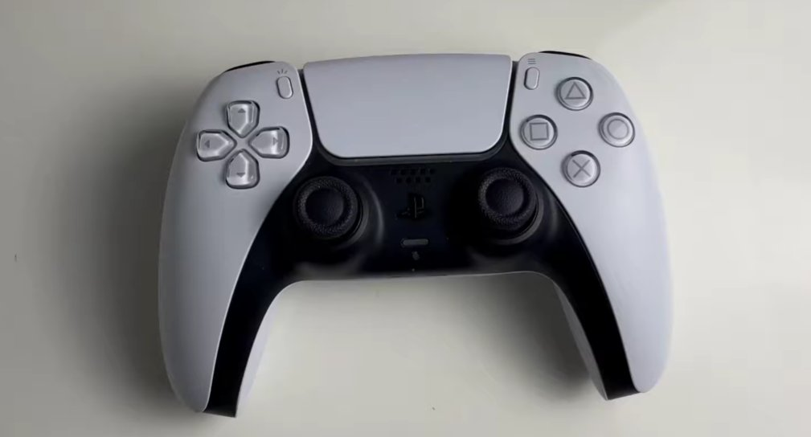
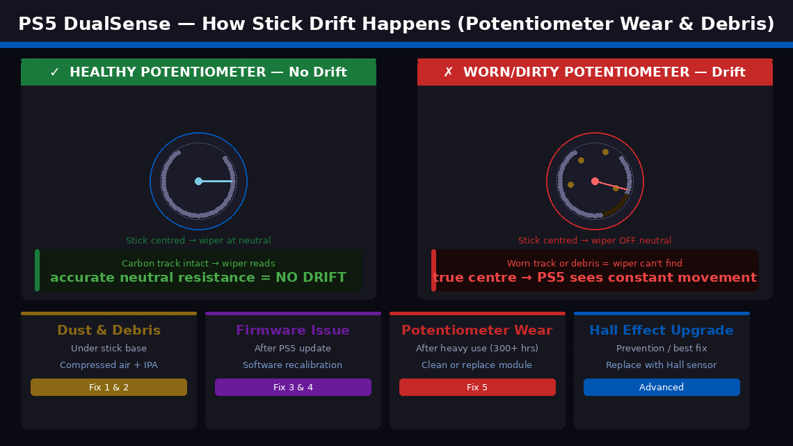
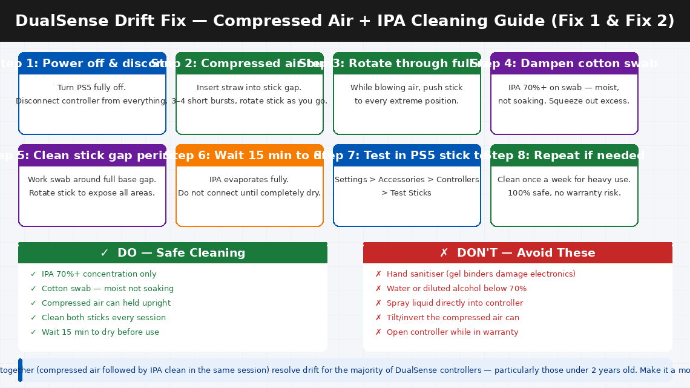
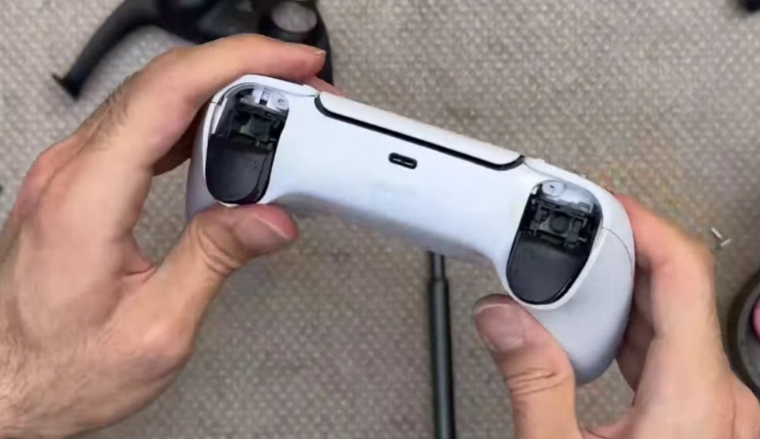
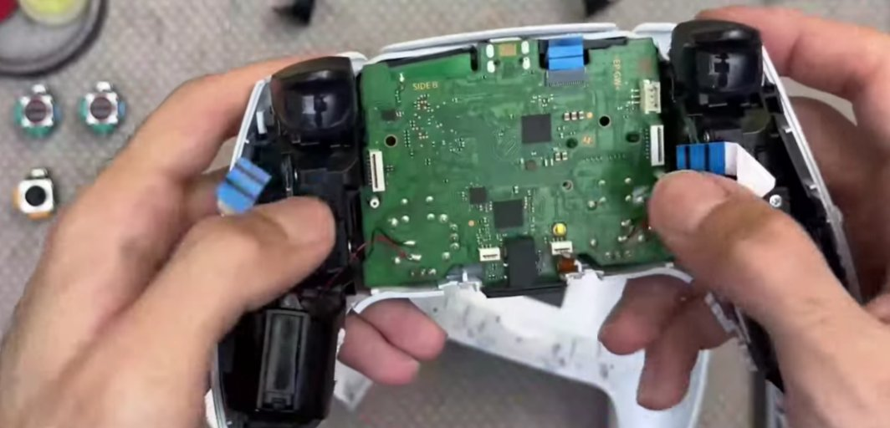
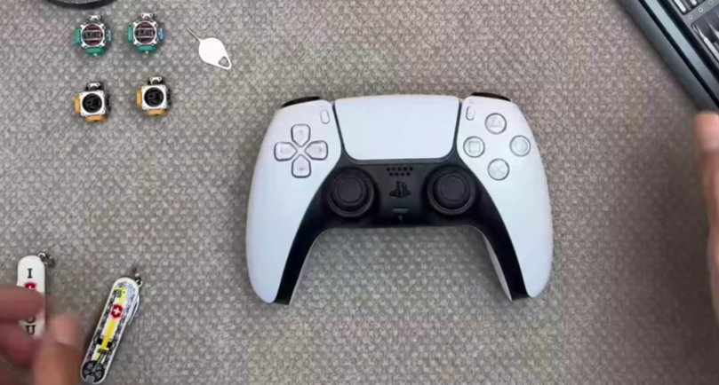

Your Character Is Moving. You’re Not Touching Anything.
There’s nothing more maddening than being in the middle of a tense game — a boss fight, a ranked match, a perfectly timed shot — and watching your character suddenly start moving on their own. The camera drifts sideways. Your aim creeps upward. Your character walks into a wall while you’re standing completely still. You haven’t touched the left stick. You haven’t touched anything. But your PS5 DualSense controller has decided it knows better.
You recalibrate. It helps for ten minutes, then starts again. You try ignoring it. It gets worse. You look up the cost of a new DualSense and feel your jaw tighten.
Here’s what you need to know: analogue stick drift on the PS5 DualSense is one of the most widely reported hardware issues for this controller — and in many cases it can be fully resolved at home without opening the controller, without voiding your warranty, and without spending a single rupee or dollar. The cleaning methods in this guide have restored thousands of drifting DualSense controllers to perfect precision.

What Is Analogue Stick Drift and Why Does It Happen?
In plain English, stick drift means your PS5 controller’s analogue stick is sending movement input to the console when you are not touching it — as if an invisible hand is gently pushing the stick while your hands are completely off the controller.
Each analogue stick in the DualSense sits on top of a small component called a potentiometer — a sensor that measures the stick’s exact position by tracking how electrical resistance changes as the stick moves. When the stick is centred and untouched, the potentiometer should report a neutral resistance value, which the PS5 interprets as “no movement.” Drift occurs when the potentiometer reports a non-neutral resistance value even when the stick is physically centred.
This happens for two main reasons:
- Dust, debris, and fine particles have accumulated around the base of the stick mechanism, physically deflecting the mechanism’s contact point away from its true neutral position and causing a constant false signal. This is the most common cause and the one most responsive to cleaning.
- The potentiometer’s carbon contact tracks have worn down through normal use. Every time you move the stick, the internal contact slides along a carbon-coated track. Over thousands of hours of play, this track wears unevenly — and worn tracks cannot accurately return to a neutral resistance value.
A third, less common cause is firmware miscalibration — the PS5’s operating system losing accurate track of the stick’s neutral position after a system update. This type of drift responds to software recalibration alone.

Tools Required
You won’t need everything for every fix:
- A can of compressed air with a narrow straw nozzle — essential for Fix 1 (available for ₹300–600 in India or $8–15 in the US)
- Isopropyl alcohol (IPA) at 70% concentration or higher and cotton swabs — for Fix 2
- A small Phillips head screwdriver, size PH00 — only needed for Fix 5 (opening the controller)
- A spudger or plastic opening tool — only for Fix 5
- About 15–30 minutes for the non-invasive fixes
5 Step-by-Step Fixes
Work through these in strict order. The first four fixes are completely non-invasive and carry zero risk to your warranty. Only Fix 5 involves opening the controller.
This is the most important first step — and it works far more effectively than most people expect. Fine dust and debris that is invisible to the naked eye can accumulate in the gap between the stick and the casing, physically pushing the mechanism off its neutral resting point. Compressed air blasts this debris clear without touching a single component.
- Make sure your PS5 is turned off and the controller is not connected to anything.
- Hold the can of compressed air upright — never tilt or invert it, as tilting releases liquid propellant that can damage electronics.
- Insert the narrow straw nozzle into the gap between the analogue stick and the plastic casing around it — the small circular channel where the stick meets the controller body.
- Deliver 3–4 short, sharp bursts of air around the full perimeter of the stick — rotate the nozzle position as you go to clean all sides.
- While blowing air, rotate the stick slowly through its full range of motion — moving it to each extreme position opens different parts of the internal mechanism to the airflow.
- Tilt the controller to different angles between bursts so gravity helps carry debris out.
- Repeat on the right analogue stick even if only the left is drifting — debris migrates between sticks during play.
- Wait 5 minutes for any disturbed particles to settle, then connect the controller to the PS5 and test in Settings → Accessories → Controllers → Test Sticks.
Many users find that compressed air alone completely eliminates their drift — particularly on controllers under a year old where wear hasn’t yet become a factor.
If compressed air reduced the drift but didn’t eliminate it entirely, the next step is a targeted isopropyl alcohol clean. IPA dissolves the oils, sweat residue, and sticky debris that compressed air cannot dislodge — and at 70% concentration or higher, it evaporates completely without leaving residue or damaging electronics.
- Power off the PS5 and disconnect the controller completely.
- Dampen a cotton swab with isopropyl alcohol — the swab should be moist, not soaking. Squeeze out any excess before using.
- Insert the damp swab tip into the gap between the analogue stick and its surrounding casing and work it slowly around the full perimeter of the stick base.
- As you clean, rotate and tilt the stick to expose different areas of the mechanism — push the stick to each extreme position while cleaning.
- Use a second swab for the opposite stick.
- Allow the controller to air-dry for 10–15 minutes before connecting — IPA evaporates quickly but the mechanism should be fully dry before use.
- Test the controller again. Many cases of drift that compressed air reduced but didn’t eliminate are fully resolved at this stage.
The IPA clean can be repeated once a week as a maintenance step on controllers used heavily — it is completely safe for the external mechanism and does not affect any warranty.

If the drift is subtle — a slow, gradual creep rather than a strong pull — it may be a calibration offset rather than physical debris. The PS5 includes a built-in stick dead zone adjustment that can correct for minor potentiometer drift without any physical intervention.
- From the PS5 home screen, go to Settings (gear icon, top right).
- Navigate to Accessories → Controllers.
- Select Adjust Stick Dead Zones.
- Select the drifting stick and follow the on-screen calibration process.
- Increase the dead zone slightly for the affected stick — the dead zone is the radius around the stick’s centre that the PS5 ignores as neutral. Increasing it by one or two steps prevents minor drift signals from registering as movement.
A firmware reset can resolve drift caused by a software calibration error — particularly drift that appeared suddenly after a PS5 system update rather than developing gradually over weeks.
- Turn off the PS5 completely — not rest mode, a full power-off from Settings → System → Turn Off PS5.
- On the back of the DualSense, locate the small Reset button — it is in a tiny hole near the L2 trigger, accessible with a pin, SIM ejector tool, or unfolded paper clip.
- Press and hold the Reset button for 5 seconds using the pin. You will feel a faint click when the button is engaged.
- Release and wait 10 seconds.
- Reconnect the controller to the PS5 via USB-C cable and press the PS button to pair it.
- Test the stick behaviour — a firmware reset sometimes recalibrates the stick’s neutral position as part of the reconnection handshake.

If all four non-invasive fixes have been completed without fully resolving the drift, the issue is almost certainly physical wear on the potentiometer’s contact tracks. Addressing this requires opening the controller.
Cleaning the potentiometer without replacement (first attempt):
- Remove the four PH00 Phillips screws on the back of the controller — two near the grips and two near the triggers.
- Using a plastic spudger, carefully separate the front and back casing halves — work around the perimeter slowly, releasing the clips one at a time. Do not force.
- Locate the analogue stick module — the raised rectangular component the stick shaft protrudes through.
- Without removing the module, apply a tiny drop of isopropyl alcohol (90%+ concentration) directly to the base of the potentiometer’s shaft. Rotate the stick through its full range 20–30 times to work the IPA through the internal contact tracks.
- Allow to dry for 20 minutes. Reassemble and test.

Replacing the potentiometer with a Hall Effect module (recommended permanent fix):
Replacement Hall Effect stick modules — an upgraded alternative to the original potentiometer-based modules that are inherently more resistant to wear — are available online for approximately ₹400–800 per module (India) or $10–20 (US). Replacement requires desoldering the original module and soldering the new one. Detailed video guides for the specific DualSense stick module replacement are available on iFixit.com.

When to Contact Sony Support
For PS5 controller drift, “calling a professional” most often means using Sony’s warranty programme — which is specifically designed for this issue and is free if the controller is within its coverage period.
- Your DualSense is within its 1-year warranty period. Sony is well aware that DualSense drift is a widely reported issue, and warranty claims for stick drift are generally processed smoothly. Sony will either repair or replace the controller at no cost. Do not open the controller before making a warranty claim.
- The drift is severe from day one or appeared within weeks of purchase. This points to a manufacturing defect rather than wear, and is a clear warranty case.
- You completed Fix 5 (internal cleaning) but drift persists and you are not comfortable with soldering for the module replacement. Local electronics repair shops in most Indian cities can perform a DualSense stick module replacement for approximately ₹500–1,200 including parts and labour.
- The controller has additional issues alongside drift — trigger problems, haptic feedback faults, or charging port damage. Multiple simultaneous faults suggest a more systemic issue that benefits from professional diagnosis.
To make a Sony DualSense warranty claim:
- India: sony.co.in/support — Customer care: 1800-103-7799 (toll-free, Monday to Saturday)
- US: playstation.com/en-us/support — Phone: 1-800-345-7669
- You can also initiate a warranty claim through PlayStation’s online portal — log in with your PSN account and register the controller using its serial number (printed on the back label)
Quick Summary
| Fix | Difficulty | Warranty Safe? | Time |
|---|---|---|---|
| Compressed air clean around stick base | Very Easy | ✓ Yes | 5 min |
| Isopropyl alcohol clean at stick base | Very Easy | ✓ Yes | 15 min |
| Recalibrate dead zone via PS5 settings | Very Easy | ✓ Yes | 5 min |
| Factory reset via back button + USB pair | Very Easy | ✓ Yes | 5 min |
| Open controller, clean or replace potentiometer | Moderate | ✗ No | 30–60 min |
Start at Fix 1 and work through Fixes 2, 3, and 4 before considering anything that requires tools. The compressed air and IPA cleaning combination resolves drift for the majority of DualSense controllers — particularly those under two years old — and both are completely safe, free to perform, and carry zero warranty risk.